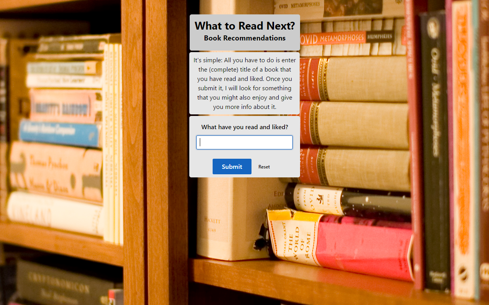

Full-Stack JavaScript
&
Front-End Web Developer
(Not much of a web designer though)
Coder
Info about me as a coder

Creator
Info about me as a creator
Explorer
Info about me as an explorer

List of Projects
Flappy Bird

A project that taught me a lot of JavaScript, Flappy Bird was my first real introduction to that language. I learned how to link JavaScript files together and keeping the code simple to read and understand. This also introduced me to Node.js (not used in this project though) by showing me require statements to link the files together. This sparked an interest in Node.js that lead me to enlarging my skillset and becoming a Full-Stack JavaScript Developer.
API "Hack"
In this project, I learned how to interact with the endpoints of an API. As it was the introduction of basic CRUD functions, it actually dovetailed nicely into my rising interest in Node.js. This one is just a simple recommendation program for any books, shows, movies, and more that you enjoy.
Hot or Cold
Although initially built as pure JavaScript, I ended up refactoring this when I started learning React and Redux. All I did was create the components and set up the flow of info through the app. It was hard initially to wrap my head around the abstraction of React, but the addition of Redux really helped to make things easier for me.
Sorry, the server demonstrating this is currently down. It will soon be fixed.
Task List
This project was my final project at Thinkful. It is a full-stack app with a React/Redux front-end and, using Node.js and Socket.io, connects to a RethinkDB database to keep track of tasks via a persistent list. The tech stack that I used here I am interested in using as my main stack for any future side-projects as it lends itself very nicely to the real-time web.